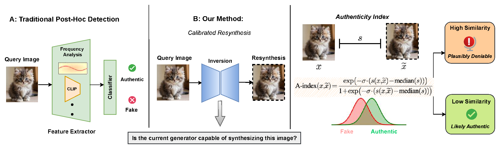
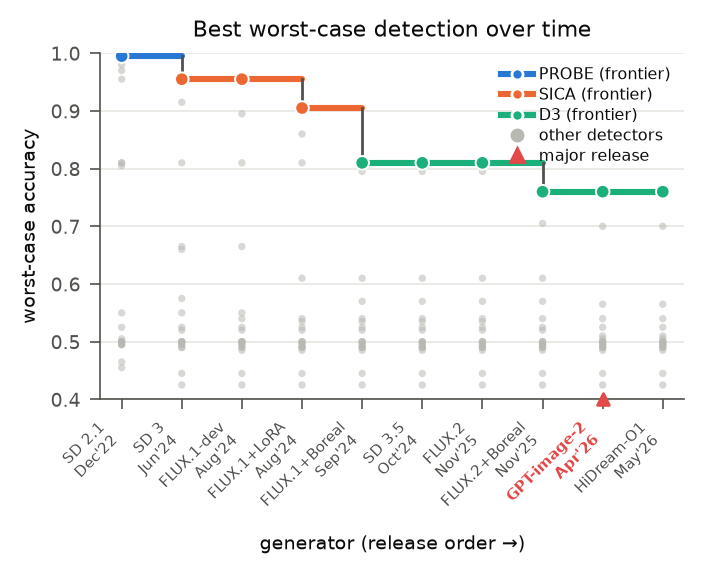
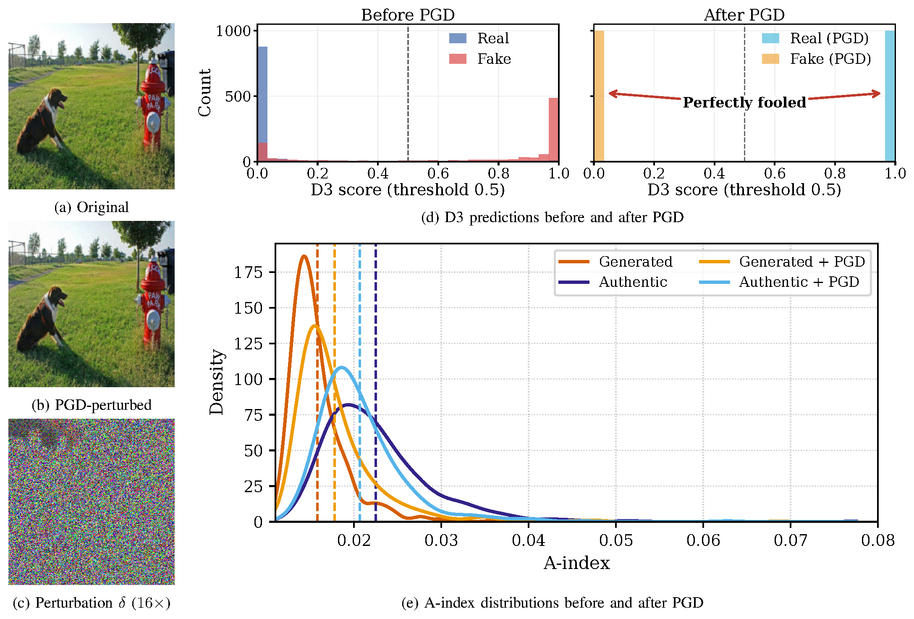

Traditional detection
Force every image into “real” or “fake.”
Artifact-based classifiers can lose reliability as generators evolve or inputs are adversarially perturbed.
01 · OVERVIEW
When authentic and generated images can be identical—including through memorization—content alone cannot always establish provenance. Our method narrows the claim to something testable.
Traditional detection
Artifact-based classifiers can lose reliability as generators evolve or inputs are adversarially perturbed.
Calibrated resynthesis
If a tested generator can reconstruct the query faithfully, abstain and return that reconstruction as evidence.

ABSTRACT
We introduce calibrated content authentication, a selective framework for certifying an image as authentic relative to a tested set of generators. For each generator, the method reconstructs the query by inversion, measures reconstruction fidelity across complementary views, and converts those measurements into an Authenticity Index.
Generator-specific thresholds are calibrated on held-out synthetic samples to control false certification. A query is certified only when it clears every tested threshold; otherwise, the method abstains and exposes the reconstruction that made synthetic provenance plausible. The evaluation spans 20 detectors, 10 generators, bounded white-box attacks, and preliminary image-to-video transfer.
02 · METHOD
The pipeline asks a concrete question for every tested generator, then combines four views of reconstruction fidelity into one interpretable score.
Invert the query through a known generator and reconstruct it with the same model.
Compare pixels, structure, perception, and semantics with PSNR, SSIM, LPIPS, and CLIP.
Fit a generator-specific threshold to a target false-certification rate on held-out samples.
Certify only if every tested generator is unable to reconstruct the query faithfully.

INTERACTIVE EXPLAINER
Move the example A-index and switch between the reported SD3 Medium safety and security thresholds.
Close-up shown from 0 to 0.06; the complete A-index spans 0 to 1. The security threshold accounts for the evaluated bounded attack.
This generator can reproduce the query closely enough that synthetic provenance remains plausible.
03 · RESULTS
The benchmark follows detector generalization over successive generator releases and then stress-tests all 20 detectors with a bounded white-box attack.
Generalization over time
Across ten generator configurations, the best-performing detector changes from PROBE to SICA to D3 as the generator frontier advances.

Adversarial stress test
Under an ℓ∞ PGD attack with ε = 8/255, D3 retains the highest post-attack accuracy at just 1.75%. The calibrated resynthesis score remains separated in the evaluated setting.

EVIDENCE VIEWS
The A-index combines four complementary similarity signals; faithful resynthesis produces lower scores and prompts abstention.

For SD3 Medium, the threshold moves from 0.0365 to 0.038. The evaluated PGD attacker raises its best candidate from 0.0148 to 0.0154—still below the security threshold.
Applied to the same SD3 inversion scores, 1,116 images exceed the SD2.1 threshold versus 55–79 for four newer configurations. These are unverified images, not authenticity labels.

04 · SCOPE
Content authentication is most useful when the certificate says exactly what was tested—and does not imply more.
What certification means
What it does not mean
Certify relative to what you tested. Abstain when a generator can explain the image.
05 · CITATION
The codebase includes the detector benchmark, white-box attack harnesses, RF-Inversion pipelines, and A-index implementation.
@article{hashmi2026certification,
title = {Certification of Real Images through
Calibrated Content Authentication},
author = {Hashmi, Sarim and Elsayed, Abdelrahman
and Alam, Mohammed Talha and Poppi, Samuele
and Lukas, Nils},
journal = {arXiv preprint arXiv:2610.05870},
year = {2026}
}